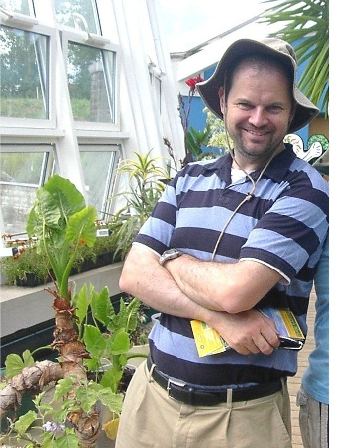

Hello, and welcome to my family history website.
My cousin in Australia, Lesley Cains has been doing a great job tracking down other Cains relatives and pointing them to this site, so if you are one of these, then welcome to the Cains clan !
From here you can read about our ancestor Alexander Cairens who was involved in the defense of the Yorkshire coast when John Paul Jones fought the famous battle of Flamborough Head in 1779 against the British warship Serapis.
Here are Alexander Cairens's children, who later changed their name to Cains. I have recently been able to trace several Cains relatives descended from this family.
His son Henry Cairens (later Henry Cains), my great-great grandad who married first a rich widow, then married his servant girl when aged 54, had children up the age of 63, then married a third time when he was 74 !
More details of Henry Cains' children and his descendants
Another relative Gilbert Cains ( Bertie Cains) who fought in several naval battles in WW1 and after, and was commended for bravery.
Alexander's grandson Andrew moved to London and has many descendants in the Luton area and Australia.
I have listed on these pages some out-of-print books as sources. Some of these can be bought second-hand through various websites, for instance Alibris.
Cains is a rare name name so I have looked for businesses and places named Cains
I have also made a section for my grandmother's father and his brother who were killed in world war one.
Click here for general family tree advice
Any interest, please send me an email, to simon @ cains . myzen . co . uk ( without the spaces)
Simon Cains,
Buckinghamshire, England
